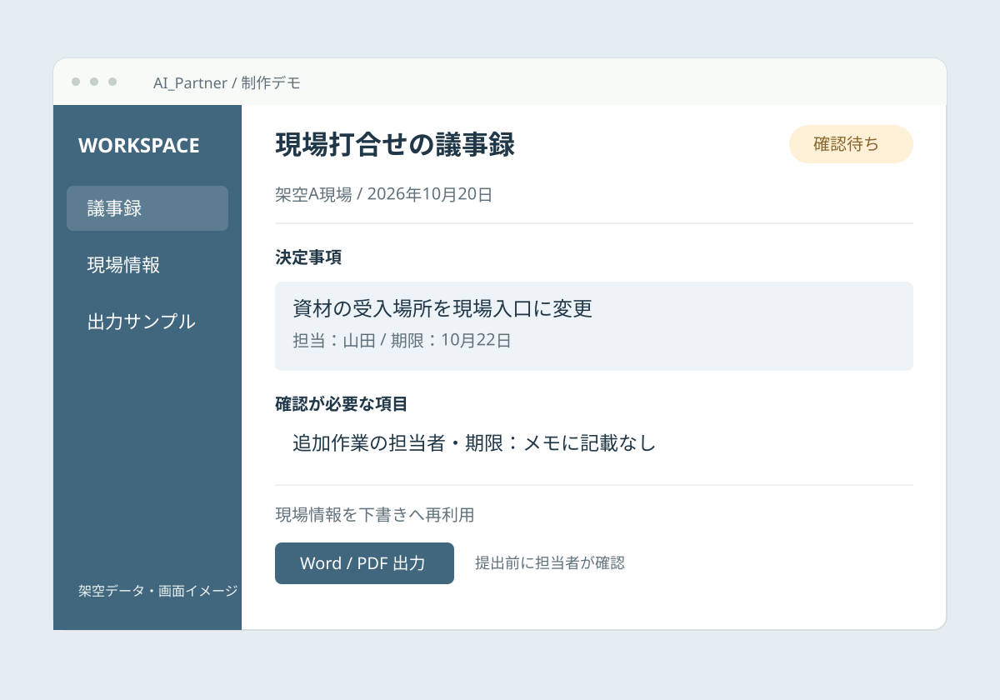

会議後に、もう一仕事
メモや録音を振り返り、議事録の文章を整えるまでに時間がかかっています。
OUR WORKS 02 / DOCUMENT WORKFLOW
議事録・安全書類作成の自動化
音声や作業メモから、決定事項と確認が必要な情報を整理。現場情報を使い回し、担当者が仕上げる下書きをつくります。

01 / BEFORE
以下は想定する業務課題です。実在する顧客の導入前状況ではありません。
メモや録音を振り返り、議事録の文章を整えるまでに時間がかかっています。
現場名や工期など、共通する情報を複数の書式へ繰り返し転記しています。
決定事項、担当者、期限を拾い直す必要があり、記載のない項目が埋もれがちです。
02 / SOLUTION
導入時に目指す業務の流れです。確認・修正の工程を残して設計します。
音声・メモと現場情報を用意
AIが要点・決定事項を抽出
共通情報を所定の項目へ転記
担当者が確認してWord / PDFへ
03 / TRY THE DEMO
架空データで操作を体験できます。撮影・AI読み取り・外部連携は行いません。入力内容は外部へ送信・保存せず、再読み込みすると初期化します。実際の個人情報は入力しないでください。
資材の受入場所は、現場入口に変更することで決定。
山田さんが10月22日までに受入案内を更新する。
追加作業について確認が必要。担当者・期限は未定。
現場情報を下書きに再利用する例です。音声のアップロードやAI要約の実行は、このデモには含みません。
架空A現場 / 議事録下書き
資材の受入場所を現場入口に変更する。
受入案内を更新する。
担当：山田 ／ 期限：2026年10月22日
追加作業の内容・担当者・期限は未確定。推測で補完せず、確認対象として残します。
正式な安全書類ではありません
現場名：架空A現場
打合せ日：2026年10月20日
資材受入場所：現場入口
提出先の指定書式、最新の法令・運用ルール、対象作業、必須記載事項、確認者。対応範囲は確認後に決めます。
このデモは準備する情報の整理例です。正式書式への記入や安全性の判断、自動提出は行いません。
ダウンロードは上記の固定議事録です。どちらのタブでも同じファイルです。
04 / AFTER
測定件数：0件。実際の削減時間・削減率・月間削減時間は、まだ確認していません。
TIME SAVING SIMULATOR
作業時間を入力すると、計算結果を確認できます。
実測の成果や導入後の効果を保証するものではありません。
1件の単位：会議・関連書類1セット。改善後の時間には、人の確認・修正・例外対応も含めてください。
ご自身の条件を入力してください。
削減率 =（改善前の平均時間 − 改善後の平均時間）÷ 改善前の平均時間 × 100
月間削減時間 =（改善前の平均時間 − 改善後の平均時間）× 月間処理件数 ÷ 60
同じ作業範囲・同じ品質基準で測定し、件数、対象期間、利用ツール、データの状態、確認・修正時間、例外処理の件数と所要時間を記録します。エラーや失敗した処理も含めて平均を計算し、公開時に条件と根拠を併記します。
05 / OPERATION & SAFETY
導入時に確認する運用設計です。
本デモに認証・権限管理機能はありません。
会社指定の書式と最新の法令・運用ルールを確認したうえで、安全書類の対応範囲を決めます。AIの出力を完成書類として自動提出せず、必ず担当者の確認を経ます。
LET’S TALK ABOUT YOUR WORK.
今の業務の流れや、お使いのツールからお聞きします。
御殿場・静岡東部の、小さな業務改善から。
初回相談無料。相談フォームに、事例名が入力されます。